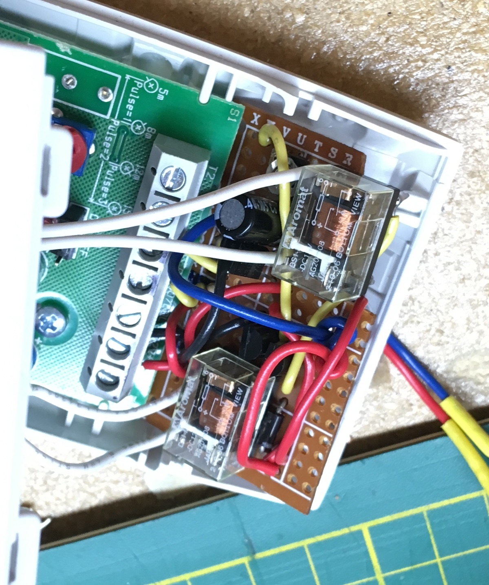

Motion Sensor Audio Switch
For an installation by Cheryl l'Hirondelle.
A 12v security motion sensor was adapted to control an audio signal.

A custom circuit adds an adjustable delay (set for 50 seconds) to keep the audio signal active once it's triggered. Testing with music:
The whole setup fits inside the original motion detector, except the barrel jack for power! I used one of the purple jacks I got for Printer Power

Planning more thorough testing in the next few days.